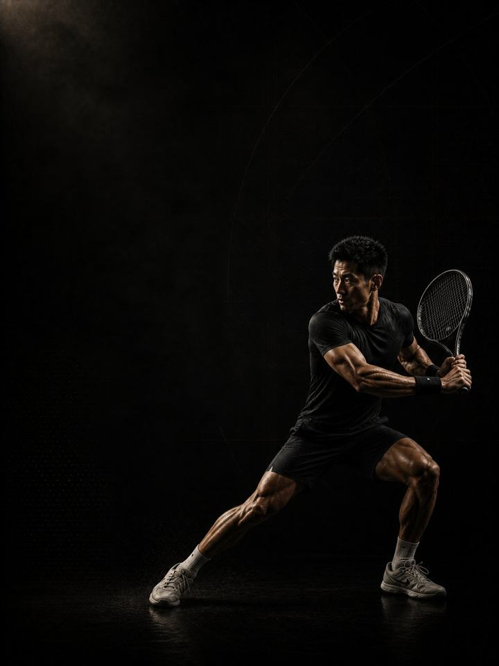

Rotational · Base
Build the shoulder, the trunk and the legs that a racket season is about to spend.
- Built forpadel, tennis and squash players
- Training days3 gym days a week around your sport, or 2 in season
- Session length48–60 minutes
- Equipmentfull gym, plus a med ball, sled and cones if available
- Formatmobile PDF, every exercise linked to a demo video
- Get all four blocks of this sport family for 119.990 KD (159.960 KD if bought separately).
- Upgrade to 1:1 coaching within 30 days and this price comes off your first month.
The store opens soon. For now, Buy opens an Instagram message and you receive the PDF there.
Who it's for
Padel, tennis and squash players who want to get through a season without the usual breakdowns. Racket players get injured in the same three places: the shoulder, the elbow, and the lower limb on the lunging side. The reason is simple. The sport is played almost entirely on one side of the body, overhead, at speed, and most players do nothing else to prepare for it.
This block is the deposit. It builds shoulder capacity before the serving volume arrives, trains rotation on purpose instead of leaving it to the sport, and makes the legs strong in the deep lunge positions the court demands. Nothing here is court-specific yet. You cannot move sharply into a corner on a leg that cannot hold you there.
Where it sits in the year: Block 1 of 4 in the Rotational family. Base, Build, Compete, Restore, in that order. Run it in your off-season or the quietest stretch of your playing calendar.
Your week
Three non-consecutive gym days in the off-season. In season, Days 1 and 2 only.
| Sun | Mon | Tue | Wed | Thu | Fri | Sat | |
|---|---|---|---|---|---|---|---|
| Off-season, 3 days | Day 1 | Sport | Day 2 | Sport | Day 3 | Rest | Rest |
| In-season, 2 days | Day 1 | Sport | Day 2 | Rest | Sport | Match | Rest |
The tables in the PDF are written for the 3-day version. In season, never train within 24 hours of a match, and keep the shoulder and groin work every week regardless.
Every session runs the same way:
- Warm-up, 8–10 min. The same sequence every session. Glutes, hips and shoulders switched on before anything fast happens.
- Speed and power, 12–15 min. Throws and jumps, with full recovery between sets. The set stops the moment quality drops.
- Strength, 20–25 min. The heavy compound lifts, with two to three minutes between sets. This is force, not conditioning.
- Tissue work, 8–10 min. Nordics, Copenhagens, calves and carries. Last, and never cut.
Throws and jumps always come first, before fatigue. Tissue work comes last so that it survives a rushed session instead of being cut from the middle of one.
How the 12 weeks progress
Racket sport is the most one-sided thing most people do: thousands of repetitions, one dominant side, overhead, at speed. That produces a predictable set of problems. A shoulder with the range but not the strength. An elbow taking load the shoulder should have taken. A lunging leg that meets the floor harder than it can handle. This block builds all three before the season asks for them. Load climbs through all twelve weeks. The emphasis moves every four.
| Weeks 1–4 | Weeks 5–8 | Weeks 9–12 | |
|---|---|---|---|
| Phase | Structural capacity | Rotational force | Reactive strength |
| Goal | Build maximal strength and shoulder girdle capacity | Build trunk strength for rotational force transfer | Build reactive strength for court push-off and recovery |
| Looks like | General strength and shoulder capacity, nothing court-specific | Loaded rotation, heavier overhead work, single-leg and deep-lunge strength | Split steps, lateral push-offs and short recoveries, with strength held |
| Working sets a week | 60 | 65 | 68 |
| Average effort | RPE 6.8, about 3 reps in reserve | RPE 7.3, about 2.7 in reserve | RPE 7.6, about 2.4 in reserve |
| Landings a week | 52 | 72 | 72 |
| Throws a week | 60 | 20 | 70 |
RPE is effort rated from 1 to 10. RPE 7 means about 3 reps left in the tank. Working sets exclude the warm-up.
Deload weeks: weeks 6 and 12 are lighter. Halve the sets, drop the throwing volume, then retest fresh.
The rules that make it work
- Strength is the point of this block. Load climbs for all twelve weeks. Finishing where you started means the block failed, however the court work felt.
- The shoulder work runs every session. External rotation, Y raises and rows appear in all twelve weeks. The sport delivers plenty of overhead volume. This is what makes it survivable.
- Pull more than you press. The sport itself leaves racket players front-loaded and internally rotated. The rowing and pulling volume here is deliberately higher than the pressing.
- Train both directions of rotation. Every rotational exercise is done evenly on both sides, even though the sport is not. That balance is the whole injury argument.
- Close the gap, don't just add load. Start every single-leg and single-arm set on the weaker side and match the strong side to it.
- A jump number is the cheapest fatigue test there is. Three standing broad jumps at the start of every Day 1, keeping the best. More than 10% below your own rolling average means reduce that day: drop the power work and one set from each lift. It takes ninety seconds.
- Count landings, not just sets. Every jump, hop, bound and drop is a landing your tendons pay for, warm-up hops included. Throws, sprints and split steps are not. Keep the week under about 120 landings in Base. Sport practice counts on top.
Terms
- Block: 12 weeks. This program. One block develops one set of qualities to a set standard.
- Phase (mesocycle): 4 weeks. Each one targets one quality. Four weeks is a choice, not a rule. The length follows the goal.
- Training week (microcycle): where effort climbs, sets are added and the deload lands.
- Training year (macrocycle): four blocks in order (Base, Build, Compete, Restore), about 48 weeks.
How you'll measure progress
You retest in the deload weeks, 6 and 12, so the numbers are taken fresh. The weekly broad jump tracks fatigue in between.
What good progress looks like
- Weeks 1–4: general strength climbs quickly and the shoulder work starts to bite. Expect the racket side to feel clearly weaker at first.
- Weeks 5–8: rotation gets stronger and the lunge hold improves fast.
- Weeks 9–12: the first fast lateral work feels controlled instead of desperate.
Block done when: you are stronger, deeper in the lunge, and the racket shoulder no longer aches the morning after a long session.
Respect the week
Count everything: matches, sport training, gym and sleep. Sudden jumps in weekly workload are the most reliable predictor of injury in amateur sport. In a heavy sport week, drop a gym session or cut the power work, but never cut both the sport and the recovery. Protect 7–9 hours of sleep. It is the most powerful performance tool available, and the cheapest.
The science
Every program in the library is built on published research, and how strong that research is gets stated, not implied. Where the evidence is limited, the page says so.
| Finding | Source | What it does not show |
|---|---|---|
| Strength training cuts sports injuries to under a third of the control rate. Stretching does not reduce them. | Lauersen, Bertelsen & Andersen, British Journal of Sports Medicine 2014. Meta-analysis of 25 RCTs, 26,610 participants. PMID 24100287 | Risk ratio 0.32 for strength training and 0.96 for stretching. The trials varied a lot, and dose was not standardised. |
| Every sensible prescription beats not training. Heavier loads rank highest for strength. Multiple sets rank highest for muscle size. | Currier, McLeod, Banfield et al., British Journal of Sports Medicine 2023. Network meta-analysis, 178 strength and 119 hypertrophy studies. PMID 37414459 | The differences between prescriptions were small, and all of them worked. |
| Programs that include the Nordic hamstring exercise roughly halve hamstring injuries. | van Dyk, Behan & Whiteley, British Journal of Sports Medicine 2019. Meta-analysis, 15 studies, 8,459 athletes. PMID 30808663 | Risk ratio 0.49, or 0.55 with the high-risk-of-bias studies removed. It measures programs that include the exercise, not the exercise alone. |
| One adductor exercise, three times a week in pre-season and once a week in season, cut reported groin problems by 41%. | Harøy et al., British Journal of Sports Medicine 2019. Cluster-randomised trial, 35 teams, 652 male footballers. PMID 29891614 | Odds ratio 0.59. Self-reported, semi-professional men's football only. Not yet repeated in women or other sports. |
What's next
After 12 weeks:
- Next block: Rotational · Build
- One area needs work: the Corrective series
Want it built around you? One-to-one coaching through the Trainerize app: programming shaped by your goal, schedule and history, video review of your technique, and weekly adjustments. Seats are limited. DM @a_bouzubar with "COACHING".
Before you buy: get cleared first if
- You have chest pain, unusual breathlessness, palpitations or dizziness with exertion.
- You have uncontrolled high blood pressure, a known heart condition, or recent surgery.
- You are pregnant or recently post-partum. Get clearance and a tailored program first.
- You have sharp joint pain in one spot that won't settle. Start with the matching AXIS corrective program.
This program is general fitness guidance. It does not replace a medical assessment.
- Get all four blocks of this sport family for 119.990 KD (159.960 KD if bought separately).
- Upgrade to 1:1 coaching within 30 days and this price comes off your first month.
The store opens soon. For now, Buy opens an Instagram message and you receive the PDF there.